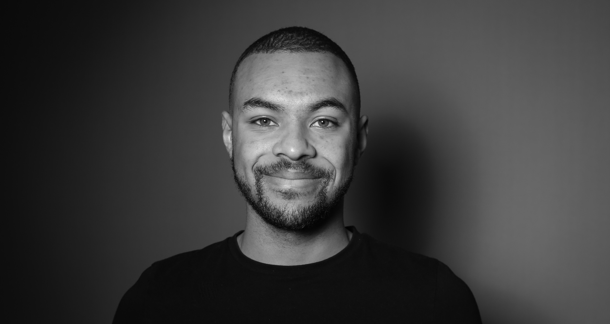

Co-fondateur
Marvin
Erichot
Ingénieur dans le numérique, Marvin a toujours voulu créer un projet utile pour les personnes qui en ont le plus besoin. Avec Les Petits Explorateurs, il souhaite rendre possibles ces découvertes qui changent le regard d’un enfant sur le monde — et sur lui-même.